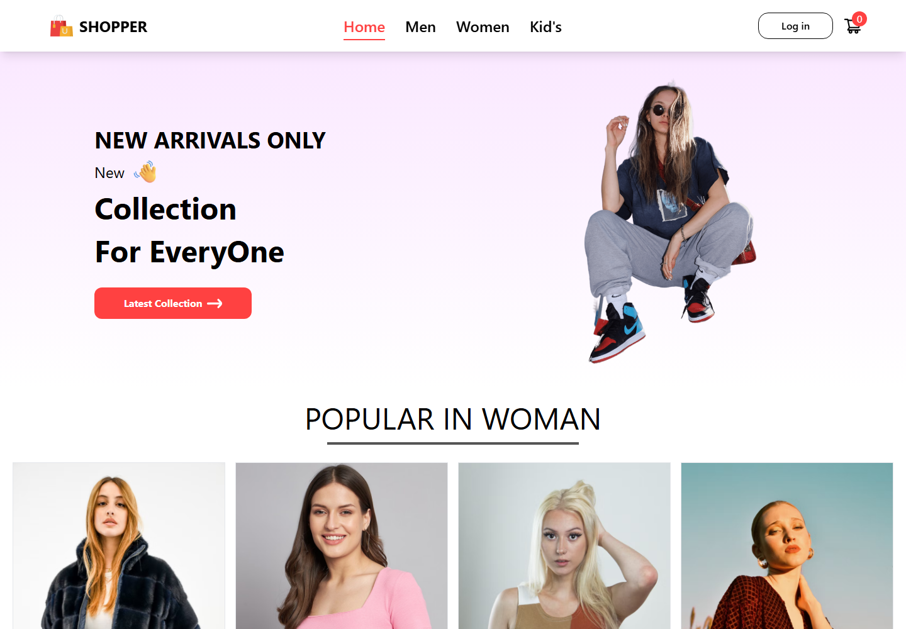

RUNNING PROJECT · SHOPPER01 / REACT STOREFRONT
Shopper E-Commerce
A clothing storefront with category browsing, product pages, cart, and login routes. Captured running from the public GitHub repository.
A developer with a builder’s mindset. Turning ideas into thoughtful, scalable web experiences — one detail at a time.
I’m Satyam Shukla, a Computer Applications graduate focused on building useful, dependable software. I enjoy working across the stack — from shaping a clean interface to designing the data model behind it.
Currently pursuing my MCA at ABESIT, Ghaziabad, where I’m among the top 1% of my batch. I bring a grounding in OOP and databases, a collaborative mindset, and an appetite for solving real problems.
More about my journey ↗
RUNNING PROJECT · SHOPPERA clothing storefront with category browsing, product pages, cart, and login routes. Captured running from the public GitHub repository.
The Design of Everyday Things CHECKED OUT · 10:42 AM
Clean Code RETURNED · 09:18 AM
Thinking in Systems NEW MEMBER · YESTERDAY
A web-based book catalog with administrator and user workflows, drawn from the project repository. Its card visual is an illustrative concept preview.
✳ Shopper screenshot was captured from the running GitHub project. The book management visual is an illustrative preview, not an original app screenshot.
ABESIT, Ghaziabad · Among top 1% of batch
Data Structures · Java · Web DevelopmentHi-Tech, Ghaziabad
C · C++ · Java · DBMS · OOP · Web TechnologiesMeta · Coursera
Professional certificateOffline training program
Full-stack fundamentals